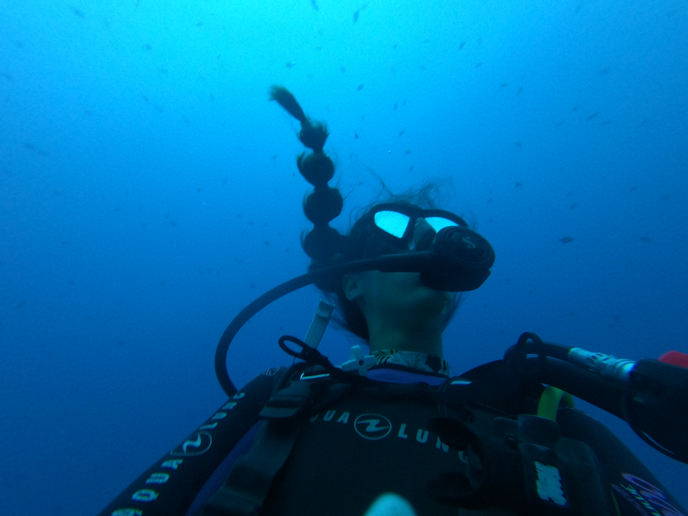
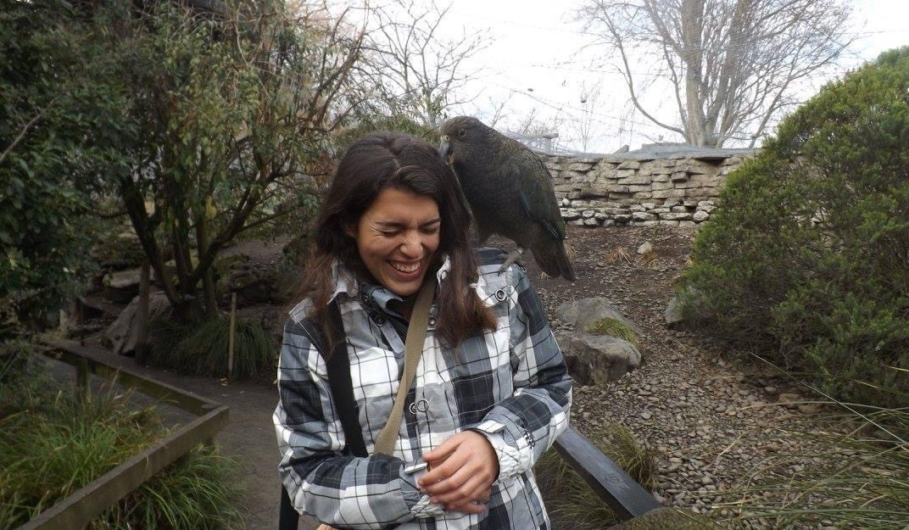
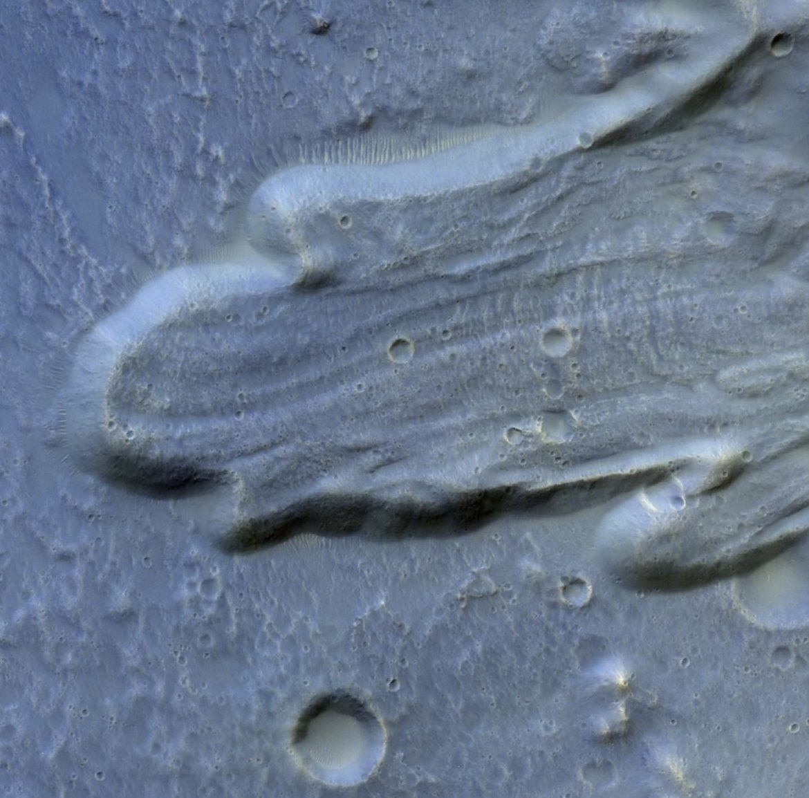
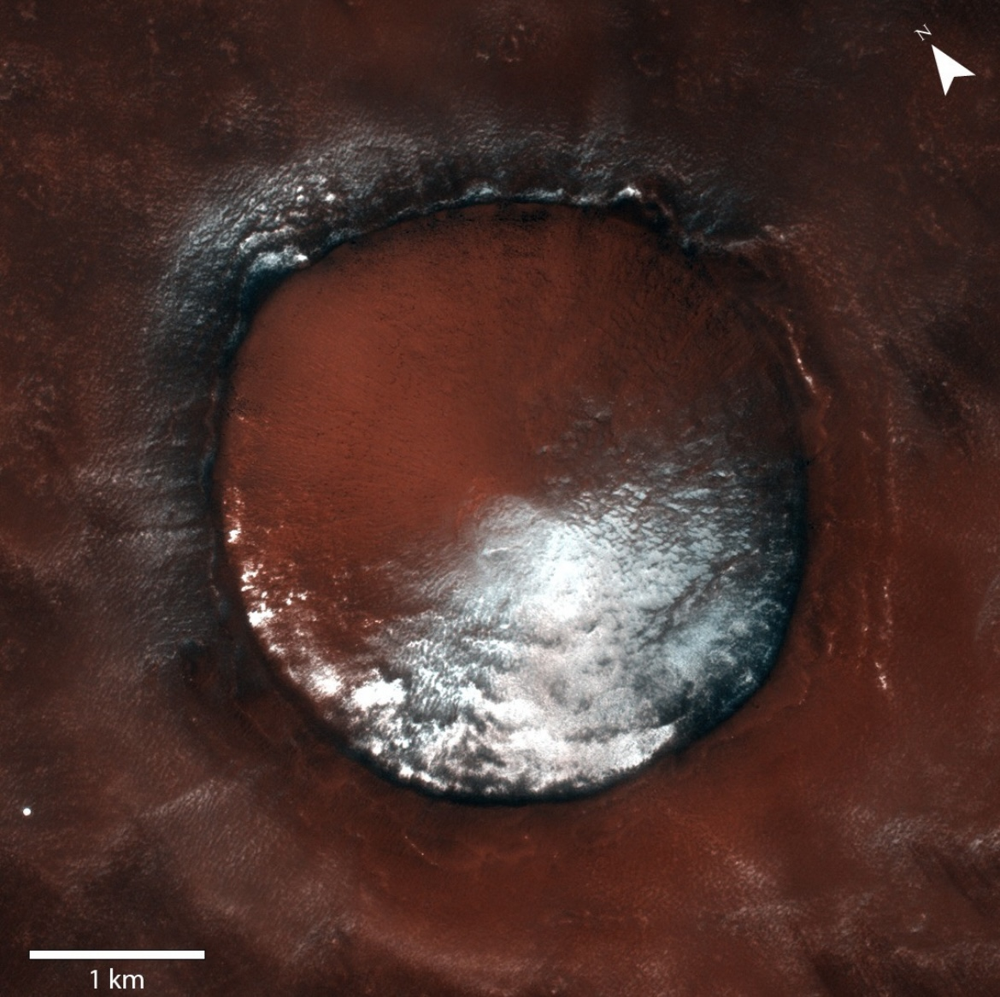
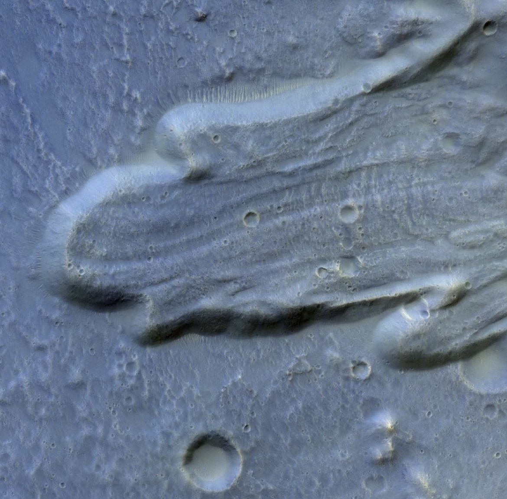
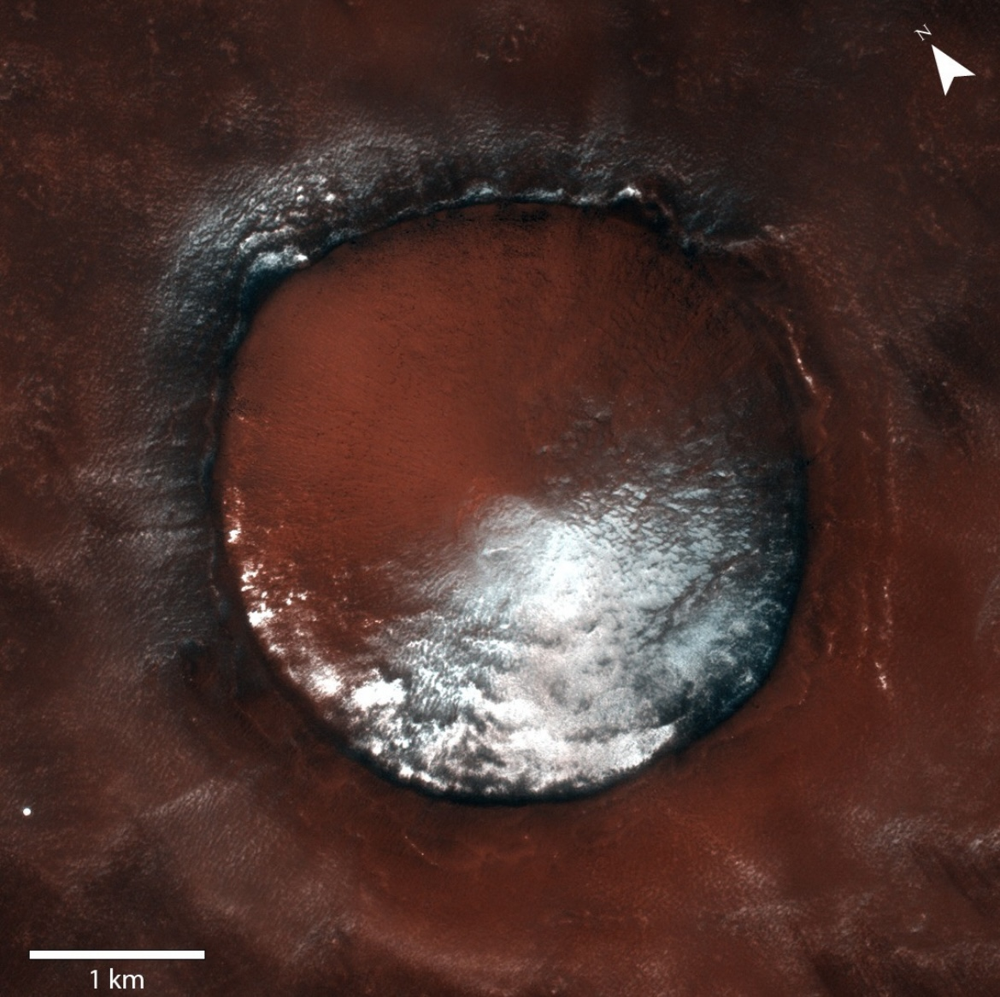

Camila Cesar
Melbourne, Australia
About Me

I am a planetary scientist with a multi-disciplinary training in space mission operations, remote sensing,
experimental project design & management, big data collection, processing & analysis.
Seismologist and Geologist by training, I was interested in stuying other planets early on.
I was given an opportunity to do a doctoral research at the University of Bern (Switzerland) to
study the Martian polar regions using high resolution images from the
Colour and Stereo Surface Imaging System (CaSSIS) camera onboard the ExoMars Trace Gas Orbiter
and understand the origin of the seasonal spots, fans and araneiform structures.
This project was coupled to experimental work at the IceLab facility to recreate similar processes
(formation of a thick translucent ice slab covering a dusty martian surface) and analyse the evolution of
the spectophotometric properties during its formation and sublimation phases.
Growing up in the Caribbean, I have always been sensitive to environmental
consciousness and sustainability awareness. As a certified diver, I am highly
committed to ocean & wildlife protection and preservation. I aspire to offer insights
and have a positive impact on various audiences through educational outreach initiatives.
Coming from a multicultural family, I place the highest importance on creating
environments that values inclusiveness, diversity, and equality as core principles.
I have a passion for travel and an adaptable lifestyle. This allows me to be flexible
in terms of location and to embrace the opportunity to explore new places.
I also have a deep appreciation for both reading and cinematic works, as it allows me
to embark on intellectual personal journeys of the mind, offering a deep sense of travel and discovery.

Volunteering & Outreach
Highlighting my engagement in space sciences and my strong dedication to environmental causes, I firmly believe in the significance and positive impact of outreach activities that engage diverse audiences, especially young individuals. The following list showcases the events in which I've taken part. Please note that all images used are either from the public webpages/videos of the events or my own, the web resources are provided as hyperlinked underlined text.
— Guides Unit Leader (May 2024 - March 2025) —
Supervision of 9-12 year-olds (Guides) and preparation of educational activities with GirlGuiding NZ.

— Wildlife Video Analyst (Apr 2024 - Current) —
Monitoring of local Kākā nest boxes, video footage review and sorting with Pest Free Kaipātiki.

— Underwater Waste Collection (Oct 2023) —
Debris sorting crew for a major underwater cleanup event in Arcachon (France) with The SeaCleaners, Nettoyeurs SubAquatiques & MerTerre (YouTube video here in French).
— CaSSIS Mars demystified (2023) —
Laboratory specialist and scientific consultant for a series of short educative videos on Mars. Links to EP1, EP2 and Magic Science Pro webpage.
— AstroVoices (Nov 2022) —
Appareance on the AstroVoices project of the International Astronomical Union for the celebration of the diversity of women in Astronomy and the UNESCO World Science Day for Peace and Development. Bern im All event with the University of Bern.

— Nacht der Forschung (Sept 2022) —
Animator on the "Build your comet" booth for the Night of Research public event with the University of Bern.
— Bilder vom Mars (Mar 2022) —
Contributor and translator for the Book Bilder vom Mars.
— CaSSIS Social Media (2021-2022) —
CaSSIS social media manager & media release coordinator. Links to CaSSIS instagram and CaSSIS Twitter.
 




— Bern im all (Jun 2019) —
Interviewed for the "Next Generation Space Scientists" local film viewing for the Bern im All event with the University of Bern.

— Scouts and Guides Leader (2014-2017) —
Guidance and oversight of children aged 8 to 14 with environmentally conscious educational activities with the Scouts et Guides de France (SGDF)
— Cetacean Week Exposition (Nov 2009) —
Cetacean information booth animator for the Cetacean Week event in Guadeloupe with Evasion Tropicale and the special participation of French Journalist Frédéric Courant (C'est pas sorcier).
Work Portfolio
Panda Education
Christchurch, New Zealand
Science Teacher
August 2024 - March 2025
- Developed and delivered science lessons for Year 4, 7, and 8 students, with positive initial feedback from both students and colleagues.
- Implemented hands-on science experiments and group activities to increased student participation and fostered a deeper interest in scientific concepts amongst 18 students.
Universität Bern
Bern, Switzerland
Polar Planetary Scientist – Ph.D. Project
October 2018 - January 2023
- Reviewed and catalogued large datasets from the CaSSIS imager, processed and analysed orbital images using GIS/IP software and programming.
- Led mission operations to acquire satellite images of Mars, provided 126 targets and planned 1500+ images, communicated with engineers on improvements and commanding specificities, organised a special observation campaign and presented the outcome to team meetings.
- Implemented new experimental protocols, fully automated the acquisition and calibration procedures, collaborated with fellow researchers on several laboratory projects in situ and overseas.
- Presented results at international conferences and workshops, supervised school projects and supported various outreach projects.
Physics Teaching Assistant
February 2019 – June 2022
- Prepared and supervised physics tutorial and practical classes, contributed to the teaching and final assessment materials.
- Facilitated discussion and provided a positive learning environment with feedback and additional material.
University of Southern California
Los Angeles, USA
Seismologist
February – July 2018
- Analysed seismic signal using SAC to detect low frequency earthquakes in the San Jacinto Fault Zone, evaluating the substantial risk of a major seismic event.
- Engaged weekly with advisor and peers, provided systematic report on the advancement of the project, produced a detailed dissertation and presented findings to a panel of specialists.
Institut des Sciences de la Terre (ISTerre)
Grenoble, France
Numerical Modeler
May – July 2017
- Strengthen a C++ code to model Alfven wave propagation using the FreeFEM++ software.
- Produced a scientific report and oral presentation on the theoretical background and results.
Institut de Planétologie et d’Astrophysique de Grenoble (IPAG)
Grenoble, France
Laboratory FTIR Analyst
June – August 2016
- Prepared Orgueil Meteorite samples in a clean controlled environment and operated a FTIR spectrometer.
- Collaborated with a small team to investigate the sample properties and compiled an experimental report.
Université Grenoble-Alpes
Grenoble, France
IT Tutor
September 2016 - June 2017
- Theoretical and practical classes on internet security, multimedia tools, basics of coding & troubleshooting.
- Student evaluation for the "Certificat Informatique et Internet" (C2i).
Couvent d’Ô
Bonnieux, France
Art Gallery Tour Guide
June – August 2014
- Welcoming visitors and explaining the work and life of Louise Bourgeois.
- Providing information on local region and activities.
Publications
— In preparation —
Cesar C., Pommerol A., Thomas N. (in preparation) Experimental study of seasonal CO2 ice at high Martian latitudes : formation, sublimation and spectrophotometry.
Tornabene et al. including Cesar C. (in preparation) Spectral signatures from the CaSSIS colour band ratios.
Conway S., Beck C., Herny C., Cesar C., Sylvest M., Patel M. (in preparation) An experimental study of the effect of dust on sublimation induced mass movement on Mars.
— 2025 —
Thomas N., Pommerol A., Hauber E., Portyankina G., Tirsch D., Schmidt F., Cesar C., Valantinas A., Bickel V., 2025, Space Science Reviews (doi:10.1007/s11214-024-01128-4 ), Seasonal and Short Timescale Changes on the Martian Surface: Multi-Spacecraft Perspectives.
— 2022 —
Cesar, C., Pommerol, A., Thomas, N., Portyankina, G., Hansen, C.J., 2022, EGU General Assembly (Conference Talk, abstract #13204), Laboratory simulations of Martian Southern Spring : the outcome of CO2 cold jets
Cesar, C., Pommerol, A., Thomas, N., Hansen, C.J., Portyankina, G., 2022, 53rd LPSC (Conference Talk, abstract #2388), Seasonal activity at South Polar regions of Mars leading to a potential evolution model
Hansen C. J., Cesar, C., Conway S., Pommerol A., Portyankina G. et al. , 2022, 53rd LPSC (Conference Poster, abstract #2480), Searching for Seasonal Jets on Mars in CaSSIS and HiRISE Images Over Multiple Mars Years
— 2021 —
Cesar, C., Pommerol, A., Thomas, N., Portyankina, G., Hansen, C.J., Tornabene, L.L., Munaretto, G., Cremonese, G. , 2021, Planetary & Space Science (doi:10.1016/j.pss.2022.105593), Seasonal southern circum-polar spots and araneiforms observed with the Colour and Stereo Surface Imaging System (CaSSIS)
Pommerol, A., Thomas, N., Almeida, M., Read, M., Becerra, P., Cesar, C., Valantina, V., Simioni, E., McEwen, A. S., Perry, J., Marriner, C., Munaretto, G., Pajola, M., Tornabene, L.L., Mège, D., Da Deppo, V., Re, C., Cremonese, G., 2021, Planetary & Space Science (doi:10.1016/j.pss.2022.105580), In-flight radiometric calibration of the ExoMars TGO Colour and Stereo Surface Imaging System
Smith, I. et al., 2021, Planetary Sciences Decadal Survey 2023-2032 (doi:10.3847/25c2cfeb.4db95c67 ), Solar-System-Wide Significance of Mars Polar Science
Tornabene, L.L., Becerra, P., Cesar, C., Conway, S., Cremonese, G., Lucchetti, A., Munaretto, G., McEwen, A., Pajola, M., Patel, M., Perry, J., Pommerol, A., Rangarajan, V., Seelos, F., Thomas, N., Wray, J., 2021, 52nd LPSC (Conference Poster, abstract #2459, iposter), Potential Detection of Exposed Martian Water Ice with Multispectral Images from the 2016 Exomars TGO Colour and Stereo Surface Imaging System (CaSSIS)
— 2020 —
Cesar, C., Pommerol, A., Herny, C., Hansen, C.J., Portyankina, G., Thomas, N., 2020, 7th Mars Polar Science, Ushuaia Argentina (Conference Talk, abstract #6044), CO2 ice and MGS-1 mars global simulant : experimental work to recreate dark spot evolution activity and self-cleaning processes observed by CaSSIS.
— 2019 —
Cesar, C., Pommerol, A., Thomas, N., Becerra, P., Hansen, C.J., Portyankina, G., Cremonese, G., 2019, 9th Int. Conf. on Mars, Pasadena USA (Conference Poster, abstract #6253), Polar Spots on Mars observed with the Colour and Stereo Surface Imaging System (CaSSIS)
Cesar, C., Pommerol, A., Thomas, N., Becerra, P., Hansen, C.J., Portyankina, G., Cremonese, G., 2019, EPSC-DPS, Geneva Switzerland (Conference Poster, abstract #697), Polar Spots on Mars observed with the Colour and Stereo Surface Imaging System (CaSSIS)
Hansen, C., Conway, S., Portyankina, G., Thomas, N., McEwen, A., Perry, J., Pommerol, A., Cesar, C., 2019, EPSC-DPS, Geneva Switzerland (Conference Poster, abstract #388), Searching for Seasonal Jets on Mars in CaSSIS and HiRISE Images
Becerra, P., Thomas, N., Pommerol, A., Almeida, M., Cesar, C., Simioni, E., Tulyakov, S., Cremonese, G., and The CaSSIS Team, 2019, EPSC-DPS, Geneva Switzerland (Conference Poster, abstract #707), CaSSIS Observations of Polar and Circumpolar Layered Deposits on the Martian Southern Hemisphere
— 2018 —
Cesar, C., 2018, 2nd GeoPlaNet, Nantes France, Martian active polar processes observed with the Colour and Stereo Surface Imaging System (CaSSIS)
Grants & Awards
— Oct/Nov 2022 —
Europlanet2024 Research Infrastructure Award
Trans-National Access (TNA) research grant of 2.5k€ for the Mars Chamber facility
at the Open University in Milton Keynes.
— Nov 2018 —
GeoPlaNet Travel Grant
2nd Thematic School at the Laboratoire de Planétologie et Géodynamique in Nantes.
Education
Ph.D. in Physics
2023
Universität Bern
Bern, Switzerland
Thesis : "Seasonal Interactions in the south polar areas of Mars from orbital and experimental observations".
M.Sc. in Earth, Planets & Environment (Geophysics Major)
2018
Université Grenoble-Alpes
Grenoble, France
Thesis : "Low Frequency Earthquakes (LFE) in the Anza Gap San Jacinto Fault".
Maîtrise (1st Year M.Sc.) in Earth, Planets & Environment (Geophysics Major)
2017
Université Grenoble-Alpes
Grenoble, France
Thesis : "Simulation of Alfven wave propagation".
B.Sc. in Earth Sciences (Geosciences Major)
2016
Université Grenoble-Alpes
Grenoble, France
DEUG (Higher Education Diploma) in Life and Earth Sciences (Geology Major)
2015
Université d'Aix-Marseille
Aix-en-Provence, France
Certifications
First Aid Level 1
2024
Hato Hone St John
Christchurch, New Zealand
Google AI Essentials
2024
Coursera
IELTS General Training (8.5 | C2)
2023
Boat Licence | Permis Mer Côtier
2016
Direction Polynesienne des Affaires Maritimes
Raiatea, French Polynesia
Diver 2*| PA20PE40
2015
GUIDE | ANMP
Raiatea, French Polynesia
Car Full Manual Licence
2013
AUS|VIC, NZ, CH